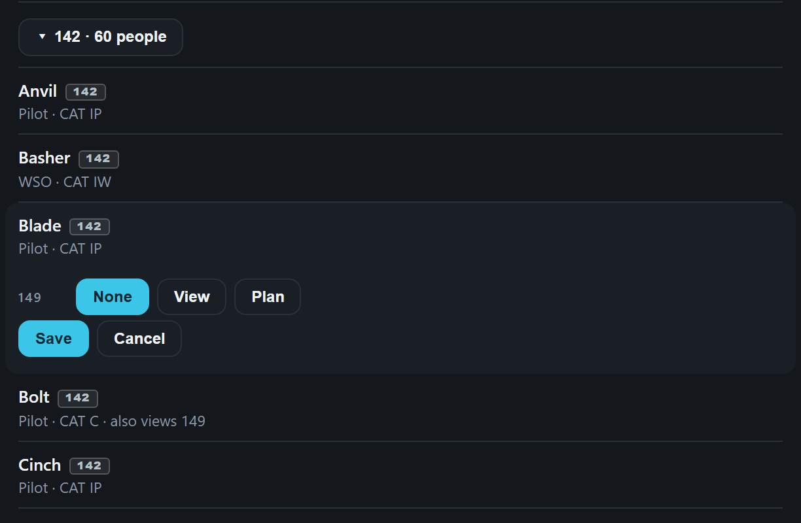
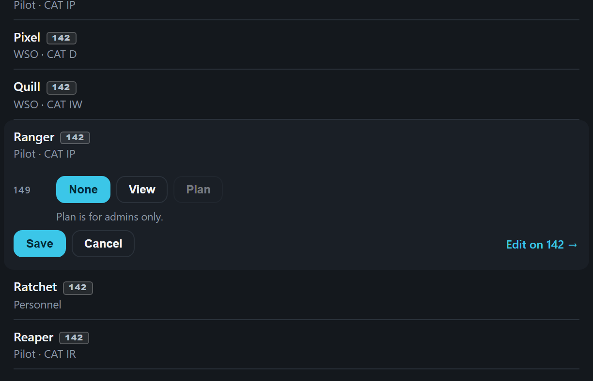

<title>Admin Users for many squadrons</title>
<meta name="claude:viewport-fit-sides" content="cover">
<link rel="stylesheet" href="https://fonts.googleapis.com/css2?family=Inter:wght@400;600&family=Space+Grotesk:wght@600&display=swap">
<style>
/* Layout: one phone column. The answers wanted first, then the whole page as one mock-up (phone, then desktop), then three parts, each: as drawn today (real pictures) -> recommended (mock-up) -> a worked example. Mock-ups are always dark, in the app's own look, whatever the page's theme. */
:root{
  --bg:#f4f6f8; --panel:#ffffff; --ink:#151b22; --muted:#55606e; --edge:#d6dde5; --accent:#0a6f8a; --rec:#0b6b45; --bad:#a3361f; --new:#8a5a00;
  --display:"Space Grotesk",system-ui,sans-serif; --body:"Inter",system-ui,sans-serif;
}
@media (prefers-color-scheme:dark){:root:not([data-theme="light"]){--bg:#0c0f13;--panel:#151a21;--ink:#e6ebf0;--muted:#97a3b0;--edge:#27303b;--accent:#38c6e8;--rec:#4fd39a;--bad:#f08a6e;--new:#e5a83b;color-scheme:dark}}
:root[data-theme="dark"]{--bg:#0c0f13;--panel:#151a21;--ink:#e6ebf0;--muted:#97a3b0;--edge:#27303b;--accent:#38c6e8;--rec:#4fd39a;--bad:#f08a6e;--new:#e5a83b;color-scheme:dark}
body{background:var(--bg);color:var(--ink);font-family:var(--body);line-height:1.5;margin:0;padding-left:max(16px,env(safe-area-inset-left,0px));padding-right:max(16px,env(safe-area-inset-right,0px));padding-block:20px 40px}
main{max-width:720px;margin:0 auto;display:grid;gap:26px}
h1,h2,h3{font-family:var(--display);text-wrap:balance;margin:0}
h1{font-size:1.4rem;line-height:1.2}
h2{font-size:1.15rem;line-height:1.3}
h3{font-size:1rem;line-height:1.3}
p{margin:0;max-width:65ch}
ul,ol{margin:0;padding-left:1.2em;display:grid;gap:6px;max-width:65ch}
.lede{color:var(--muted)}
section{display:grid;gap:12px;background:var(--panel);border:1px solid var(--edge);border-radius:10px;padding:14px;min-width:0}
section.today h3{color:var(--bad)}
section.rec h3{color:var(--rec)}
.tag{font-family:var(--body);font-size:.75rem;font-weight:600;letter-spacing:.04em;text-transform:uppercase;color:var(--muted)}
.tag.new{color:var(--new)}
figure{margin:0;display:grid;gap:6px;min-width:0}
figure img{width:100%;max-width:100%;border:1px solid var(--edge);border-radius:6px}
figure.tall img{max-height:520px;width:auto;justify-self:center}
figcaption{font-size:.92rem;color:var(--muted)}
b.rec{color:var(--rec)}
.part{display:grid;gap:12px}
.who{display:grid;gap:4px;font-size:.95rem}
.who span b{font-weight:600}
table{border-collapse:collapse;width:100%;font-size:.92rem}
th,td{text-align:left;vertical-align:top;padding:7px 8px 7px 0;border-top:1px solid var(--edge)}
th{font-weight:600;color:var(--muted);border-top:0}
.scroll{overflow-x:auto;min-width:0}

/* ---- the mock-ups: the app's own look (dark panel, hairline rows, grey squadron chip, rounded buttons), drawn in HTML ---- */
.mk{--m-bg:#14181D;--m-raise:#1A1F26;--m-edge:#2A313A;--m-edge2:#39424D;--m-ink:#F1F4F7;--m-ink2:#B6C0CB;--m-ink3:#8A96A3;--m-acc:#3BC6E8;--m-accink:#052A34;--m-ok:#57C97A;--m-new:#E5A83B;
  background:var(--m-bg);color:var(--m-ink);font-family:system-ui,"Segoe UI",sans-serif;font-size:15px;line-height:1.3;border-radius:12px;padding:12px 14px;display:grid;gap:0;border:1px solid var(--m-edge)}
.mk.phone{max-width:360px;width:100%;justify-self:center;box-sizing:border-box}
.mk.desk{min-width:640px;box-sizing:border-box}
.mk .bar{display:flex;gap:10px;align-items:center;padding:6px 0 10px;flex-wrap:wrap}
.mk .cap{font-size:12px;font-weight:700;letter-spacing:.14em;text-transform:uppercase;color:var(--m-ink2);padding:10px 0 6px}
.mk .bar .cap{padding:0}
.mk .find{flex:1 1 120px;min-width:0;border:1px solid var(--m-edge);background:var(--m-raise);border-radius:10px;padding:8px 10px;color:var(--m-ink3);font-size:14px}
.mk .btn{display:inline-flex;align-items:center;border:1px solid var(--m-edge2);background:var(--m-raise);color:var(--m-ink);border-radius:10px;padding:8px 13px;font-weight:700;font-size:14px;white-space:nowrap}
.mk .btn.on{background:var(--m-acc);border-color:var(--m-acc);color:var(--m-accink)}
.mk .btn.off{color:#5d6773;border-color:var(--m-edge)}
.mk .r{display:flex;align-items:center;gap:10px;padding:9px 0;border-top:1px solid var(--m-edge);min-width:0}
.mk .r .w{flex:1 1 auto;min-width:0;display:grid;gap:1px}
.mk .r .n{font-weight:600;font-size:16px;display:flex;gap:8px;align-items:center;flex-wrap:wrap}
.mk .r .s{color:var(--m-ink3);font-size:14px}
.mk .sq{font-size:11px;font-weight:700;letter-spacing:.06em;color:var(--m-ink2);border:1px solid var(--m-edge2);background:#20262E;border-radius:5px;padding:0 6px;font-style:normal}
.mk .dot{width:10px;height:10px;border-radius:50%;background:#4B5560;flex:none}
.mk .dot.ok{background:var(--m-ok)}
.mk .dots{display:flex;gap:44px;padding-right:10px;flex:none}
.mk.phone .dots{gap:26px;padding-right:4px}
.mk .pill{font-size:11px;font-weight:700;letter-spacing:.08em;border-radius:999px;padding:3px 9px;background:#252B33;color:var(--m-ink2);font-style:normal;flex:none;min-width:58px;text-align:center}
.mk .pill.ad{background:#17313B;color:var(--m-acc)}
.mk .pill.none{visibility:hidden}
.mk .fold{margin:10px 0 0;justify-self:start}
.mk .open{background:var(--m-raise);border-radius:12px;margin:0 -8px;padding:10px 8px 12px;display:grid;gap:10px;border-top:0}
.mk .open .n{font-weight:600;font-size:16px;display:flex;gap:8px;align-items:center}
.mk .line{display:flex;gap:8px;align-items:center;flex-wrap:wrap}
.mk .line .k{color:var(--m-ink3);font-size:13px;font-weight:600;width:34px}
.mk .acts{display:flex;gap:8px;align-items:center;flex-wrap:wrap}
.mk .link{color:var(--m-acc);font-weight:600;font-size:14px;margin-left:auto}
.mk .note{color:var(--m-ink3);font-size:13px}
.mk .more{color:var(--m-ink3);font-size:13px;padding:8px 0;border-top:1px solid var(--m-edge);font-style:italic}
.mk .isnew{outline:1.5px dashed var(--m-new);outline-offset:3px;border-radius:6px}
.mk .gap{height:10px}
.mk .field{border:1px solid var(--m-edge);background:var(--m-bg);border-radius:8px;padding:7px 10px;font-size:14px;color:var(--m-ink)}
.mk .bell{border:1px solid var(--m-edge);border-radius:10px;padding:9px 10px;display:grid;gap:2px;background:var(--m-raise)}
.mkcap{font-size:.92rem;color:var(--muted)}
.mkcap b{color:var(--new)}
.pair{display:grid;gap:14px}
</style>

<main>
  <header style="display:grid;gap:8px">
    <h1>Admin → Users, thought through for many squadrons</h1>
    <p class="lede">You asked whether the page as we are designing it will work once there are several squadrons: one look to see who from outside has control or view of your schedule, and people posted out to other squadrons and in. Nothing here is built. The dark pictures marked <b>"drawn for this page, not the app"</b> are mock-ups; the others are the drawings you have already seen.</p>
  </header>

  <section>
    <span class="tag">What to look at now</span>
    <h2>My recommendation, and three answers</h2>
    <p>Keep what is drawn (the other squadrons folded under your own people, the short rows, "Edit on 142 →"). Add <b>one block at the top of each squadron's page</b> that lists everyone from outside who plans or views that squadron, and anyone moving in or out. With that block the page works for five squadrons as it does for two.</p>
    <ol>
      <li><b>The block at the top, "From other squadrons".</b> <b class="rec">Recommended: yes.</b> <a href="#look">Part 1</a>.</li>
      <li><b>Posting a man to another squadron from Admin → Users,</b> and the squadron that wants him able to ask for him. <b class="rec">Recommended: "Post out…" on his own squadron's page; "Ask 142 to post him here" on the other.</b> <a href="#move">Part 2</a>. It is built later, with the transfer work, not now.</li>
      <li><b>E8.</b> <b class="rec">Still "E8 with the Edit link".</b> The new block makes the "All squadrons" tick even less needed, and the link becomes the one way across for everything. <a href="#e8">Part 3</a>.</li>
    </ol>
  </section>

  <section class="rec">
    <span class="tag new">New · drawn for this page, not the app</span>
    <h3>The whole page: Kestrel, 149's admin, opens Admin → Users</h3>
    <div class="mk phone" aria-label="Mock-up, phone: 149's Admin Users with the new block at the top">
      <div class="isnew">
        <div class="cap">From other squadrons · 4</div>
        <div class="r"><div class="w"><div class="n">Hunter <i class="sq">142</i></div><div class="s">Pilot · CAT IP · plans 149</div></div></div>
        <div class="r"><div class="w"><div class="n">Saber <i class="sq">142</i></div><div class="s">Pilot · CAT IP · master admin, full access</div></div></div>
        <div class="r" style="padding-bottom:4px"><span class="btn">▸ View only · 2 people</span></div>
        <div class="cap">Moving · 1</div>
        <div class="r"><div class="w"><div class="n">Cinch <i class="sq">142</i></div><div class="s">Pilot · CAT IP · joins 149 on 14 Dec</div></div></div>
      </div>
      <div class="gap"></div>
      <div class="bar" style="border-top:1px solid var(--m-edge);padding-top:12px"><span class="cap">People · 10</span><span class="find">Find a callsign or sign-in</span><span class="btn">Filter</span></div>
      <div class="r"><div class="w"><div class="n">Condor</div><div class="s">no sign-in · Pilot · CAT OCU</div></div><div class="dots"><i class="dot"></i><i class="dot ok"></i></div></div>
      <div class="r"><div class="w"><div class="n">Kestrel</div><div class="s">ad9 · Admin · Pilot · CAT IP</div></div><div class="dots"><i class="dot ok"></i><i class="dot ok"></i></div></div>
      <div class="r"><div class="w"><div class="n">Osprey</div><div class="s">us9 · Member · Pilot · CAT A</div></div><div class="dots"><i class="dot ok"></i><i class="dot ok"></i></div></div>
      <div class="more">(7 more of 149's people, left out of this picture)</div>
      <span class="btn fold">▸ 142 · 60 people</span>
      <span class="btn fold">▸ 150 · 3 people</span>
    </div>
    <p class="mkcap">Phone. <b>The amber dashed line marks what is new</b>; it is not part of the design. Hunter no longer sits among 149's own people: he is at the top, with everyone else from outside.</p>

    <div class="scroll">
    <div class="mk desk" aria-label="Mock-up, desktop: the same page with five squadrons">
      <div class="isnew">
        <div class="cap">From other squadrons · 9</div>
        <div class="r"><div class="w"><div class="n">Hunter <i class="sq">142</i></div><div class="s">Pilot · CAT IP · plans 149</div></div></div>
        <div class="r"><div class="w"><div class="n">Mako <i class="sq">150</i></div><div class="s">WSO · CAT IW · plans 149</div></div></div>
        <div class="r"><div class="w"><div class="n">Saber <i class="sq">142</i></div><div class="s">Pilot · CAT IP · master admin, full access</div></div></div>
        <div class="r" style="padding-bottom:4px"><span class="btn">▸ View only · 6 people</span><span class="note">142 · 3 &nbsp; 150 · 1 &nbsp; 151 · 2</span></div>
        <div class="cap">Moving · 2</div>
        <div class="r"><div class="w"><div class="n">Cinch <i class="sq">142</i></div><div class="s">Pilot · CAT IP · joins 149 on 14 Dec</div></div></div>
        <div class="r"><div class="w"><div class="n">Raven</div><div class="s">WSO · CAT B · leaves for 153 on 4 Jan</div></div><span class="btn">Undo post out</span></div>
      </div>
      <div class="gap"></div>
      <div class="bar" style="border-top:1px solid var(--m-edge);padding-top:12px"><span class="cap">People · 10</span><span class="find" style="flex:0 1 300px">Find a callsign or sign-in</span><span class="btn">Filter</span><span class="btn">+ Add a person</span></div>
      <div class="r"><div class="w"><div class="n">Condor</div><div class="s">no sign-in · Pilot · CAT OCU</div></div><div class="dots"><i class="dot"></i><i class="dot ok"></i></div><em class="pill none">MEMBER</em></div>
      <div class="r"><div class="w"><div class="n">Kestrel</div><div class="s">ad9 · Pilot · CAT IP</div></div><div class="dots"><i class="dot ok"></i><i class="dot ok"></i></div><em class="pill ad">ADMIN</em></div>
      <div class="r"><div class="w"><div class="n">Raven</div><div class="s">us5 · WSO · CAT B · posting to 153 on 4 Jan</div></div><div class="dots"><i class="dot ok"></i><i class="dot ok"></i></div><em class="pill">MEMBER</em></div>
      <div class="more">(7 more of 149's people, left out of this picture)</div>
      <div class="acts" style="padding-top:10px"><span class="btn">▸ 142 · 60 people</span><span class="btn">▸ 150 · 3 people</span><span class="btn">▸ 151 · 41 people</span><span class="btn">▸ 153 · 38 people</span></div>
    </div>
    </div>
    <p class="mkcap">Desktop, with five squadrons (slide it sideways on a phone). The block stays short however many squadrons there are: the people who plan 149 are always named; the people who only view it are one line with a count, opened by a tap.</p>
  </section>

  <div class="part" id="look">
    <h2>Part 1. One look: who from outside plans or views 149</h2>
    <p class="lede">When it happens: Kestrel, 149's admin, at his desk every few weeks, or the day a new commander asks "who else can change our schedule?".</p>

    <section class="today">
      <span class="tag">As drawn today</span>
      <h3>The answer is on the page, but scattered</h3>
      <p>Hunter (142) plans 149. He is in the middle of 149's own people, in A-to-Z order, told apart only by a small grey "142" and the words "also plans 149".</p>
      <figure><figcaption>Hunter, top row, sits among 149's people. The 142 and 150 headings are closed.</figcaption></figure>
      <p>Bolt (142) views 149. He is inside the closed "142 · 60 people" heading. Kestrel must open it and read down sixty rows to find "also views 149".</p>
      <figure><figcaption>Bolt, fourth row, only after opening 142.</figcaption></figure>
      <p><b>What goes wrong:</b> with five squadrons Kestrel opens four headings and reads about two hundred rows to be sure nobody else can see 149. He will not, so access given once stays for ever. And nothing tells him Saber, a master admin from 142, can change everything.</p>
    </section>

    <section class="rec">
      <span class="tag new">Recommended · new · drawn for this page, not the app</span>
      <h3>One block at the top: "From other squadrons"</h3>
      <ul>
        <li><b>Who plans 149</b> is always listed by name. They are few, and they can change the schedule.</li>
        <li><b>A master admin from another squadron</b> is listed too, with "full access". Kestrel cannot change that row; it is there so the list is the whole truth.</li>
        <li><b>Who only views 149</b> is one line, "▸ View only · 2 people". A tap lists them. If a whole squadron were given View it would still be one line.</li>
        <li>With nobody from outside, the block says so in one grey line: "Nobody from another squadron plans or views 149."</li>
      </ul>
      <p><b>How Kestrel ends it.</b> He presses the row. It opens exactly as a short row opens today, with 149's line. He presses None, then Save. One Undo step takes it back.</p>
      <div class="mk phone" aria-label="Mock-up, phone: Bolt's row opened in the block, None chosen">
        <div class="cap">From other squadrons · 4</div>
        <div class="r"><div class="w"><div class="n">Hunter <i class="sq">142</i></div><div class="s">Pilot · CAT IP · plans 149</div></div></div>
        <div class="r"><div class="w"><div class="n">Saber <i class="sq">142</i></div><div class="s">Pilot · CAT IP · master admin, full access</div></div></div>
        <div class="r" style="padding-bottom:4px"><span class="btn">▾ View only · 2 people</span></div>
        <div class="r open">
          <div><div class="n">Bolt <i class="sq">142</i></div><div class="s" style="color:var(--m-ink3);font-size:14px">Pilot · CAT C · views 149</div></div>
          <div class="line"><span class="k">149</span><span class="btn on">None</span><span class="btn">View</span><span class="btn off">Plan</span></div>
          <div class="note" style="margin-top:-4px;padding-left:42px">Plan is for admins only.</div>
          <div class="acts"><span class="btn on">Save</span><span class="btn">Cancel</span></div>
        </div>
        <div class="r"><div class="w"><div class="n">Mako <i class="sq">150</i></div><div class="s">WSO · CAT IW · views 149</div></div></div>
      </div>
      <p class="mkcap">Kestrel has opened "View only", pressed Bolt, and chosen None. Save ends Bolt's view of 149. The opened row is the one you have already seen drawn:</p>
      <figure><figcaption>The drawn short row, opened. The block uses this same row; nothing new to learn.</figcaption></figure>
      <p><b>Giving access stays where you ruled it:</b> open a squadron's folded heading, or search, press the man, choose View or Plan. The moment it is saved he also appears in the block at the top.</p>
      <p><b>Why a block, and not a filter or a line under each heading:</b> a filter is behind a button, so it is two presses and easy to forget; a line under each heading still means reading four headings. A block is seen the moment the page opens.</p>
    </section>
  </div>

  <div class="part" id="move">
    <h2>Part 2. Moving people between squadrons</h2>
    <p class="lede">When it happens: a few times a year. Cinch, a 142 pilot, is posted to 149 from 14 December. Hunter is 142's admin, Kestrel is 149's. This part is built later, with the transfer work.</p>

    <section class="rec">
      <span class="tag new">Recommended · new · drawn for this page, not the app</span>
      <h3>Posting out: a button on the man's own row</h3>
      <p>On 142's page Hunter opens Cinch. Beside Suspend, Archive and Delete is <b>"Post out…"</b>. It opens the same sheet the Leave War opens, with the same four choices and the same rules, so the two doors can never disagree. A SANS man, hidden on the Leave War, is reached here.</p>
      <div class="mk phone" aria-label="Mock-up, phone: Cinch's own row opened on 142's page with Post out, and the sheet">
        <div class="r open" style="margin-top:0">
          <div><div class="n">Cinch</div><div class="s" style="color:var(--m-ink3);font-size:14px">us7 · Member · Pilot · CAT IP</div></div>
          <div class="line"><span class="k">142</span><span class="note">Home squadron</span></div>
          <div class="line"><span class="k">149</span><span class="btn on">None</span><span class="btn">View</span><span class="btn off">Plan</span></div>
          <div class="acts"><span class="btn on">Save</span><span class="btn">Cancel</span></div>
          <div class="acts"><span class="btn isnew">Post out…</span><span class="btn">Suspend</span><span class="btn">Archive</span><span class="btn">Delete</span></div>
        </div>
        <div class="gap"></div>
        <div class="bell isnew" style="gap:10px">
          <div class="n" style="font-weight:600">Post out Cinch</div>
          <div class="acts"><span class="btn">Overseas Sqn</span><span class="btn">Delete</span><span class="btn">SANS</span><span class="btn on">Transfer to Sqn</span></div>
          <div class="line"><span class="note">To</span><span class="field">149 ▾</span><span class="note">from</span><span class="field">14 Dec 26</span></div>
          <div class="note">As of today: he takes his sign-in, inputs, leave and OIL with him. His view of other squadrons ends that day.</div>
          <div class="acts"><span class="btn on">Post out</span><span class="btn">Cancel</span></div>
        </div>
      </div>
      <p class="mkcap">Top: Cinch's row on his own squadron's page (sign-in and role boxes left out of this picture). Below: the Leave War's posting sheet, shown simply; its real design is the one already approved.</p>
    </section>

    <section class="rec">
      <span class="tag new">Recommended · new · drawn for this page, not the app</span>
      <h3>A man in transit shows on both pages, in the block at the top</h3>
      <div class="pair">
        <div class="mk phone" aria-label="Mock-up, phone: 142's page, Cinch leaving">
          <div class="cap">Moving · 1</div>
          <div class="r"><div class="w"><div class="n">Cinch</div><div class="s">Pilot · CAT IP · leaves for 149 on 14 Dec</div></div><span class="btn">Undo post out</span></div>
          <div class="gap"></div>
          <div class="bar" style="border-top:1px solid var(--m-edge);padding-top:12px"><span class="cap">People · 60</span><span class="find">Find a callsign or sign-in</span></div>
          <div class="r"><div class="w"><div class="n">Cinch</div><div class="s">us7 · Member · Pilot · CAT IP · posting to 149 on 14 Dec</div></div><div class="dots"><i class="dot ok"></i><i class="dot ok"></i></div></div>
        </div>
        <p class="mkcap"><b>142's page, Hunter looking.</b> Cinch stays in 142's list until the day, with the date on his row, as a waiting posting shows today. Hunter can take it back until 14 December.</p>
        <div class="mk phone" aria-label="Mock-up, phone: 149's page, Cinch arriving">
          <div class="cap">Moving · 1</div>
          <div class="r"><div class="w"><div class="n">Cinch <i class="sq">142</i></div><div class="s">Pilot · CAT IP · joins 149 on 14 Dec</div></div></div>
        </div>
        <p class="mkcap"><b>149's page, Kestrel looking.</b> He sees who is coming and when. He cannot change it: until the day Cinch is 142's man. On 14 December the line goes, and Cinch is in 149's own list with his whole row.</p>
      </div>
    </section>

    <section class="rec">
      <span class="tag new">Recommended · new · needs your word · drawn for this page, not the app</span>
      <h3>Posting in: the squadron that wants him asks</h3>
      <p>You ruled that a man is moved by a posting out, by the squadron he leaves. So "post in" from 149's side cannot move him by itself. I recommend the pattern you chose for an archived callsign: <b>Kestrel asks, 142's admin does it.</b></p>
      <div class="mk phone" aria-label="Mock-up, phone: Cinch's short row on 149's page with the ask, and the bell line 142's admins get">
        <span class="btn" style="justify-self:start;margin-bottom:8px">▾ 142 · 60 people</span>
        <div class="r open">
          <div><div class="n">Cinch <i class="sq">142</i></div><div class="s" style="color:var(--m-ink3);font-size:14px">Pilot · CAT IP</div></div>
          <div class="line"><span class="k">149</span><span class="btn on">None</span><span class="btn">View</span><span class="btn off">Plan</span></div>
          <div class="acts"><span class="btn on">Save</span><span class="btn">Cancel</span></div>
          <div class="acts"><span class="link isnew" style="margin-left:0">Ask 142 to post him here</span></div>
        </div>
        <div class="gap"></div>
        <div class="bell isnew"><div><i class="sq">149</i> &nbsp;<b>Kestrel asks for Cinch to be posted to 149.</b></div><div class="note">A tap opens Cinch's row on 142, ready for "Post out…".</div></div>
      </div>
      <p class="mkcap">Top: Kestrel on 149's page. Below: the line 142's admins get on the bell. The words are a first draft, to be reviewed before you see them again.</p>
      <p>Someone who is an admin of both (Saber, or Hunter for a 142 man) does not need to ask: on that same row he has "Edit on 142 →", which takes him to Cinch's full row on 142, where "Post out…" is.</p>
      <p>A man coming back from overseas, or brought back from Archived, is posted in where it is today: Restore, in the Archived group, which asks his post-in date.</p>
      <div class="scroll"><table>
        <tr><th>Who</th><th>May</th><th>Where</th></tr>
        <tr><td>142's admins, a master admin</td><td>Post Cinch to 149 on a date; take it back before the day</td><td>142's page, or the Leave War</td></tr>
        <tr><td>149's admins</td><td>See him coming; ask for a man</td><td>149's page</td></tr>
        <tr><td>Nobody</td><td>Has to accept. On the day he is 149's.</td><td></td></tr>
      </table></div>
    </section>
  </div>

  <div class="part" id="e8">
    <h2>Part 3. E8 and the folded headings</h2>
    <section class="rec">
      <span class="tag">Recommended, as before</span>
      <h3>"E8 with the Edit link" fits, and matters more now</h3>
      <p>E8 said: no "All squadrons" tick; the squadron picked stands open, the others fold; on a 142 man's short row an admin of 142 gets "Edit on 142 →".</p>
      <figure><figcaption>Already drawn: "Edit on 142 →" on Ranger's short row.</figcaption></figure>
      <ul>
        <li><b>The tick falls away for a second reason.</b> A master admin ticked "All squadrons" partly to see who holds what. The block now answers that on every squadron's page.</li>
        <li><b>The link becomes the one way across.</b> Change a sign-in, archive, or post a man out: all are done on his own squadron's page, and the link takes you there with his row open. One rule, no exceptions to remember.</li>
        <li><b>The link also shows on the block's rows</b> (Hunter's, Bolt's), for someone who is an admin of that man's squadron.</li>
      </ul>
    </section>

    <section>
      <span class="tag">With five or more squadrons</span>
      <h3>What holds up, and what breaks</h3>
      <p><b>Holds:</b></p>
      <ul>
        <li>The short row and its one access line. It is the same row in the block, under a heading, and in a search.</li>
        <li>One closed heading per squadron. Four closed headings are four buttons; they cost nothing until opened.</li>
        <li>The search. With two hundred people outside, it is how a man is really found; the headings are for browsing.</li>
        <li>"Changes to a man are made on his own squadron's page." It is what keeps the top bar telling the truth.</li>
      </ul>
      <p><b>Breaks, and what fixes it:</b></p>
      <ul>
        <li>Finding who has access by opening headings. <b>Fixed by the block.</b></li>
        <li>A Plan holder mixed into the squadron's own A-to-Z list. With several outside planners the list stops being "149's people". <b>Fixed: they move to the block.</b></li>
        <li>The "All squadrons" tick: five squadrons open is a list of two hundred and fifty editable rows under one squadron's name. <b>Fixed by E8.</b></li>
        <li>On a phone the headings sit below all of 149's people, a long scroll. <b>The search covers it;</b> I would not move the headings you ruled on.</li>
        <li>Not fixed here: a master admin has no single place to see who plans what across every squadron; he looks at each squadron's block. If you want it later, it belongs beside "+ New squadron", one line per squadron.</li>
      </ul>
    </section>
  </div>

  <section>
    <span class="tag">Cost, and what it changes</span>
    <h2>What this costs and which of your decisions it touches</h2>
    <ul>
      <li><b>The block</b> is a small addition to the build that brings the folded headings. The app already works out who plans 149; who views it is one more list.</li>
      <li><b>Posting out, the moving lines and the ask</b> ride with the transfer work, later. Nothing extra is built now.</li>
    </ul>
    <p><b>It changes:</b></p>
    <ul>
      <li>The drawing where Hunter sits among 149's own people. That placing was a reading made while drawing, not your ruling. He moves to the block.</li>
      <li>Your "All squadrons" choice for a master admin, and "his own squadron open in All squadrons too": both retire, as E8 already proposed.</li>
      <li>"On another squadron's page a man shows only his callsign, number, seat, CAT and access line": the block adds "master admin, full access" for a master admin from outside. A small addition, yours to refuse.</li>
      <li>"A man is moved only by a posting out": unchanged. The ask adds a request beside it, as you did for an archived callsign.</li>
    </ul>
    <p><b>To be drawn in the real app's look before any of it is built:</b></p>
    <ol>
      <li>The block, phone and desktop: nobody from outside; a few; many viewers; five squadrons.</li>
      <li>A block row opened, for 149's own admin, for a Plan holder (Plan greyed, with its reason) and for a master admin.</li>
      <li>The master admin's row that cannot be changed, and its words.</li>
      <li>"Moving" on both squadrons' pages, the row's date line, and the day it lands.</li>
      <li>"Post out…" on the opened row, and the sheet opened from Admin → Users.</li>
      <li>"Ask 142 to post him here", its bell line, and what Kestrel sees while he waits. The words reviewed first.</li>
    </ol>
  </section>
</main>
